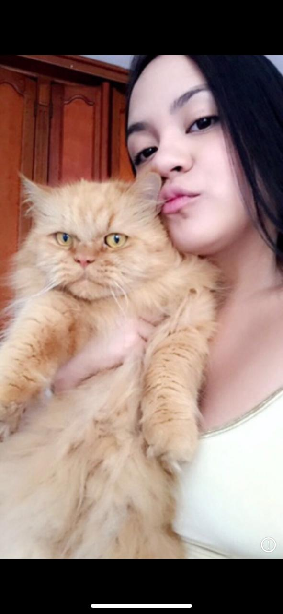
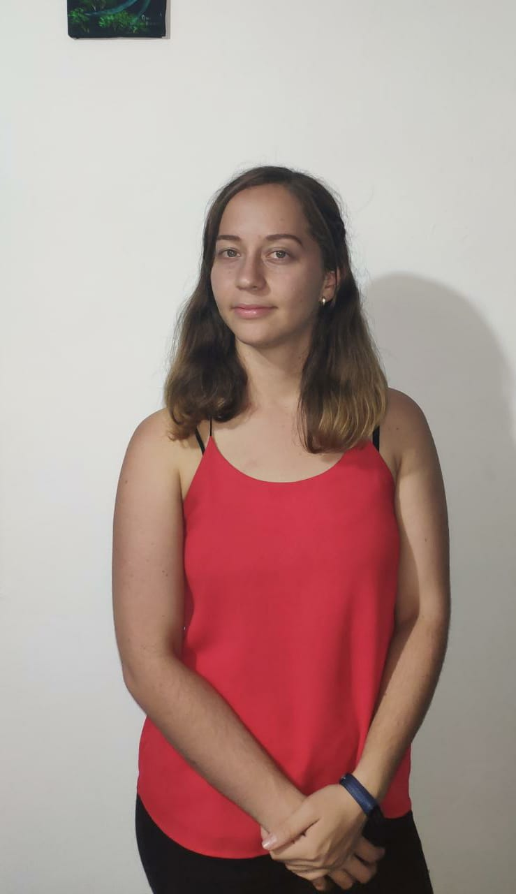
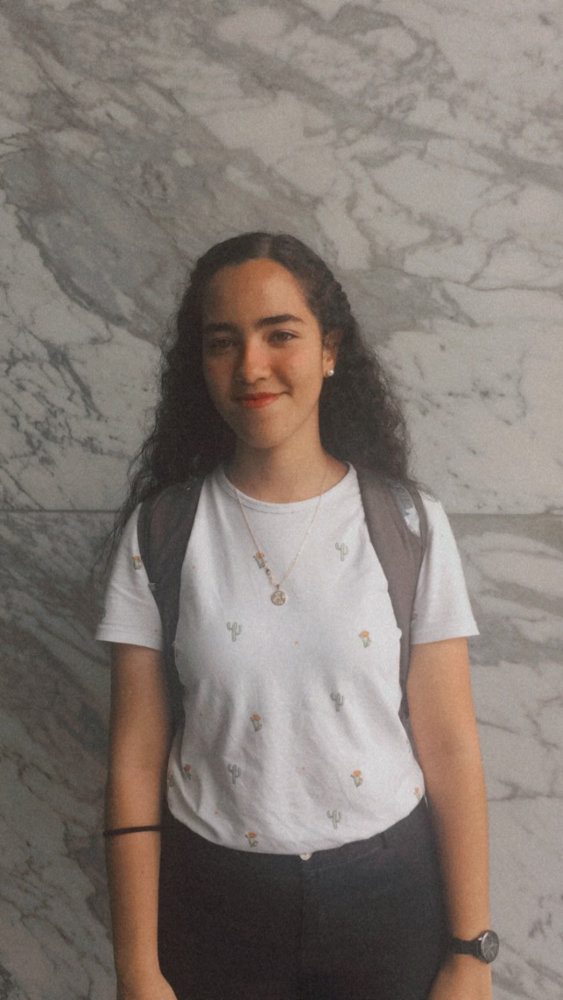
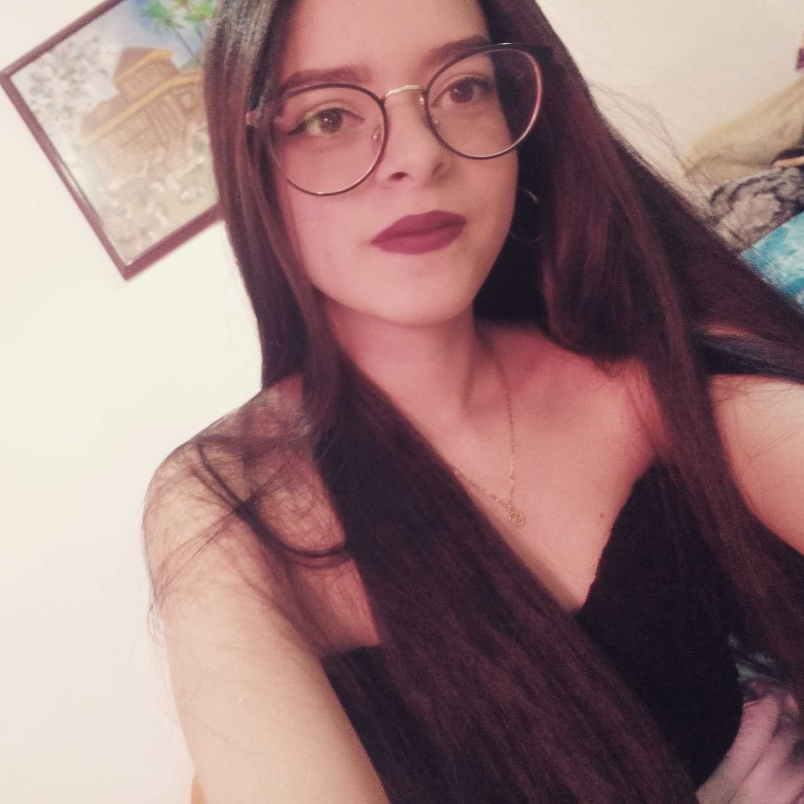
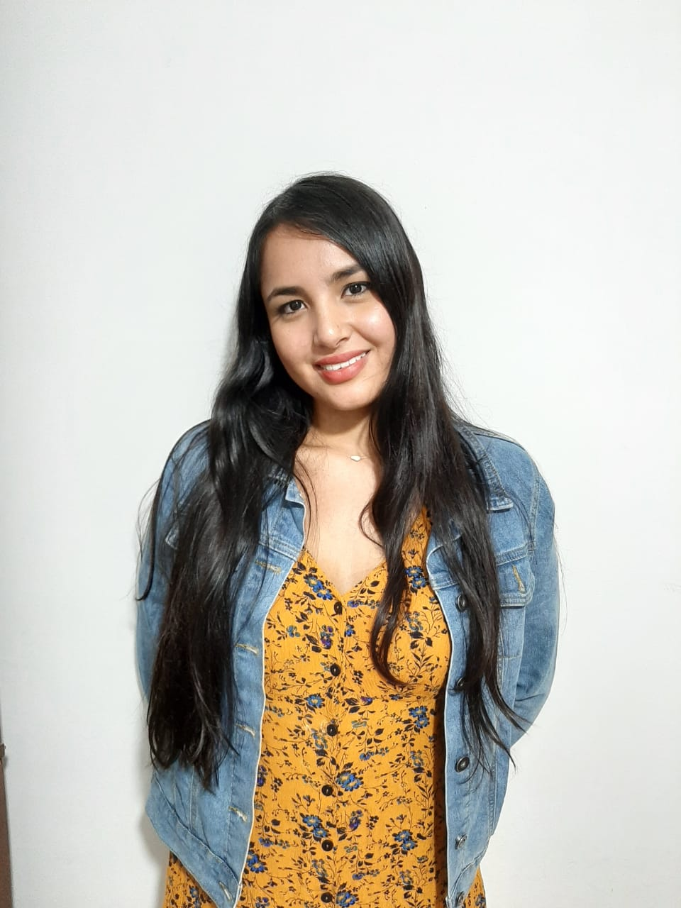

NOMBRE DEL PROYECTO
Equipo Geek Girls
Somos un grupo de mujeres amantes de la tecnología, con grandes aspiraciones (como llegar a la luna), nos encantan los animales y nuestro objetivo es dar a conocer todas nuestras capacidades, tanto profesional como personalmente.
Nuestras Fortalezas
Nuestra principal fortaleza, se basa en mostrar es nuestra capacidad de sobreponernos antes las situaciones con una buena actitud, además de esta tenemos las siguientes:
- La Disciplina
- La Perseverancia
- La Constancia
- La Entrega
- El Trabajo en equipo
- La Empatía
Nuestras Debilidades
Más que debilidades, podemos hablar de aspectos a mejorar, los cuales son:
- Comunicación asertiva
- Planeación
QUIÉNES SOMOS

Carolina Colorado
Soy estudiante de desarrollo de software, me apasiona la tecnología y los videojuegos. Me encantan los retos por lo que aprender todos los días es mi pasatiempo favorito. Cuento con conocimientos de Java, HTML5, CSS3 y JavaScript. Soy una persona con empatía por las personas y animales, se me facilita trabajo en equipo de la mano con la comunicación acertiva, este me ayuda a crecer tanto personal como profesionalmente.

Carolina Escobar
Soy administradora de empresas, estudiante del programa Desarrollo Web FrontEnd en academia Geek. Tengo conocimientos básicos en HTML5, CSS y Bootstrap. Me apasiona el análisis de datos para la toma de decisiones informada. Me gusta explorar nuevos lugares, conocer culturas y estar aprendiendo constantemente. Tengo 3 perros, 2 sobrinos y 1 gato. Soy feliz.

Maria Antonia Velásquez
Soy estudiante de Desarrollo web Front-end con énfasis en React-Js en Academia Geek. Mi mayor sueño es trabajar en la NASA como Ingeniera aeroespacial y crear una Estación Espacial Internacional para mi país, diseñar misiones espaciales y también aplicar para ser astronauta de esta organización.

Mariana Loaiza
Soy técnica en desarrollo de software y gestión administrativa ,los cuales son mis principales hobbys me gusta el tema de planear, dirigir y controlar al igual que me apasiona la programación, la tecnología y el aprendizaje. Cuento con conocimientos básicos en JS, CSS3, HTML5 y dispositivos móviles. Me gusta estar constantemente aprendiendo, adquiriendo nuevos retos que me permitan mejorar y ampliar mis capacidades. Soy una persona responsable, respetuosa, dedicada, perseverante, receptiva y paciente, proactiva. Con facilidad para el trabajo en equipo orientado a resultados, con liderazgo y adecuado manejo de relaciones interpersonales y adaptabilidad al cambio.

Paola Hernández
Ingeniera ambiental, actualmente me encuentro realizando un curso de desarrolladora web Front End en la Academia Geek, me considero una persona comprometida con mis deberes, con sentido de pertenencia y en la capacidad de trabajar en equipo, tengo la disposición de aprender de los demás y poder complementar mis competencias. Me gusta cantar, soy una persona alegre, sociable y empática.